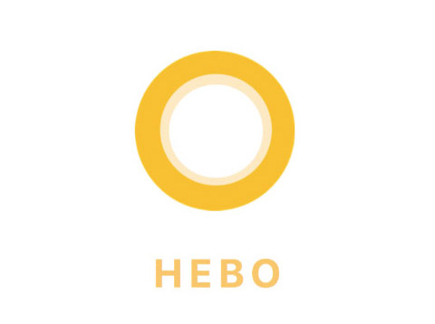

Hebo
A personal post-operative companion and assistant
PROJECT BACKGROUND
At the UPMC Dermatology Department, patients often have questions and concerns about their post-operative treatments. With these overwhelming amount of phone calls, staff members often have to dedicate significant portions of time after hours to answer all these calls. Our team worked to find a solution that would better assist patients during this post-operative period. We conducted numerous stages of research, ideation, and prototyping to finally create Hebo, a post-operative care digital assistant that used voice, text, and images to convey care information and instructions to patients. Even though I was a part of each stage of design process, I played a bigger role on the user research and testing phase to empathize and interact directly with hospital staffs and patients.
RESEARCH APPROACH
Our team started out by understanding the source of the problem we are trying to solve by conducting:
- Literature review
- Heuristic evaluation of the client's current app
- Contextual inquiries with nurses, doctors, and patients
- Interviews with nurses, doctors, and patients
- Diary studies
SYNTHESIZING THE DATA
To make better sense of our research and visualize our data, we constructed a number of models based on the patient and clinician experiences that we observed.
Cultural Model
Sequence Flow Model

Personas
From all our research, we created different personas to build empathy with our target users.
- An elderly couple, where one spouse is undergoing surgery and the other is a caregiver
- An elderly patient, who will be taking care of herself
- A nurse, who works in a dermatologic surgery clinic
VISIONING PROCESS
To proceed with our ideation process, we began a visioning session to brainstorm possible solutions The main goals we had in mind while conducting the session was to stay out of judgment, have everyone participate to get a range of ideas and viewpoints, and to be relatively specific so that the visions could be a solid springboard into our ultimate solution.
Storyboards
Educational Simulation Training

Personalized Information Pamphlet

Machine Learning Assessment App

PROTOTYPE AND USER TESTING
Our team decided to parallel prototype 2 possible solutions to which was the chatbot and the interactive tutorial on post-operative care. From our user testing, we took the best features from each prototype to create Hebo, a chatbot with limited conversation topics designed to answer questions specific to the patient’s surgery experience. The chatbot was supposed to be an intelligent FAQ. To test the chatbot, we used the Wizard-of-Oz technique, where we pretended to be the chatbot and asked participants to interact with ‘us’.
For this new iteration of our solution, we wanted our product to be a chatbot with limited conversation topics designed to answer questions specific to the patient’s surgery experience.


We performed multiple users testing session with different stages of our prototype. Our target audience included patients from the clinic, in addition to the nurses and other potential users who were above the age of 60. Participants were invited to spend some time interacting with Hebo while performing a think-aloud and then follow-up in a brief interview. Our user testing sessions produced a significant amount of valuable feedback and insights that we use to modify and iterate on the design of Hebo.
Final Screens
CONCLUSION
Due to the short timeline, our team worked to create a proof of concept that provides evidence that the personal assistant, Hebo, would help decrease the amount of patient calls. In order to build out a successful and comprehensive chatbot interface for patients, Hebo’s scope must be expanded to all aspects of patient care. Our diary study was a significant way that we collected patient concerns and questions that our client previously was not aware that patients had. This research method surprisingly reduced the number of phone calls as patients were jotting down non-urgent questions in their diary to ask during the next follow-up appointments instead of calling in. Diary studies could be used as a way to build out the patient question database and also be considered as an additional feature for Hebo.
In order to successfully carry out the remainder of this project, we recommended our client to pursue work with a dedicated team to focus on further refining Hebo, and to expand the scope of the Hebo functionalitie. Our team created a detailed transition and feasible scalability plan that allow the introduction of Hebo to multiple different clinicians serving Mohs surgery patients.